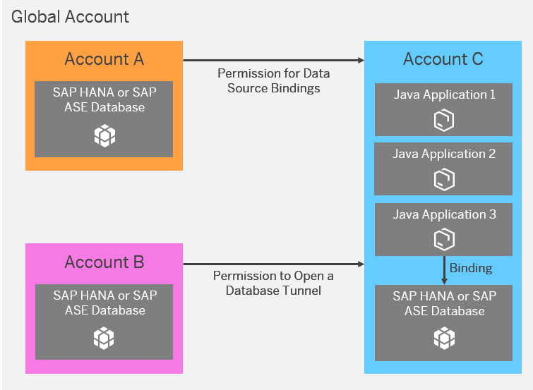
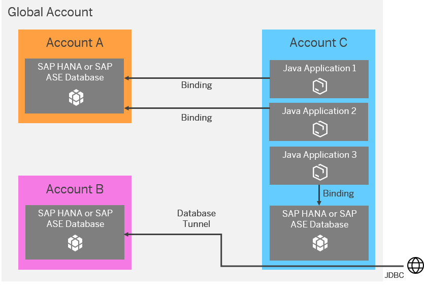

You can share productive SAP HANA or SAP ASE databases that have been provisioned in an account with other accounts of your global account.
You can give accounts controlled access to a database owned by another account by adding a cross-account permission for the accounts requesting access. Depending on the type of permission your provide, the owners of the accounts receiving the permission can bind their applications to the database and/or open a tunnel to the database that is owned by another account.
To give cross-account permissions to other accounts in your global account, you log on to the account in which the database you want to share is provisioned. Then you use the SAP Cloud Platform cockpit or the console client to give permissions to other accounts. Owners of the accounts receiving the permission will be able to see the database listed in the cockpit and in the console client, and use it in accordance with the permissions given.
The table below lists the tasks and the person responsible for sharing databases with other accounts in the same global account:
|
Task |
Responsible |
Commands used |
|---|---|---|
| Adding New Cross-Account Permissions |
Administrator in the account that owns the database |
grant-db-access |
| Changing Cross-Account Permission Types |
Administrator in the account that owns the database |
|
| Revoking Cross-Account Permissions |
Administrator in the account that owns the database |
revoke-db-access |
| Binding Applications to Databases in the Same Global Account |
Member of the account that has requested permission to use a database owned by another account |
bind-db |
| Opening a Database Tunnel |
Member of the account that has requested permission to use a database owned by another account |
open-db-tunnel |
The picture below shows an example scenario and is followed by an explanation.
Account A, B, and C are all part of the same global account. An SAP HANA or SAP ASE database is provisioned in all three accounts. Three Java applications have been deployed in account C. Java application 3 is bound to the database in account C. To bind Java application 1 to the database in account A, a member of account A provides account C with a cross-account permission for data source bindings. In addition, a member of account B gives account C the permission to open a tunnel to the database in account B.
After the cross-account permissions have been given, members of account C can see the databases owned by account A and B in the console client and in the cockpit. As shown in the picture below, account C binds two of its Java applications to the database in Account A. The cross-account permission for data source bindings provided to account C by account A is not restricted to a single application. All members of account C can bind multiple Java applications to the database in account A. Due to the cross-account permission for opening database tunnels provided to account C by account B, all members of account C can also open a tunnel to the database in account B.
